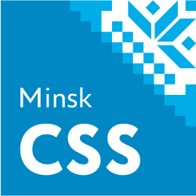
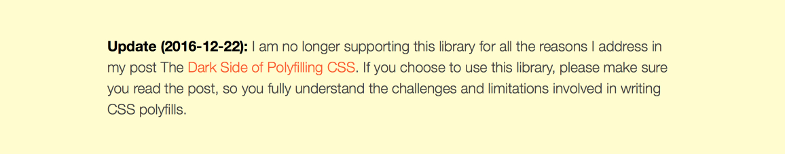
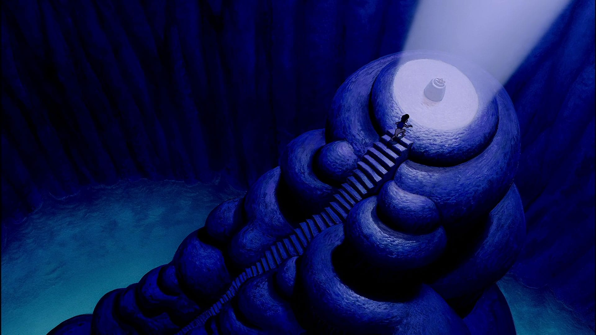
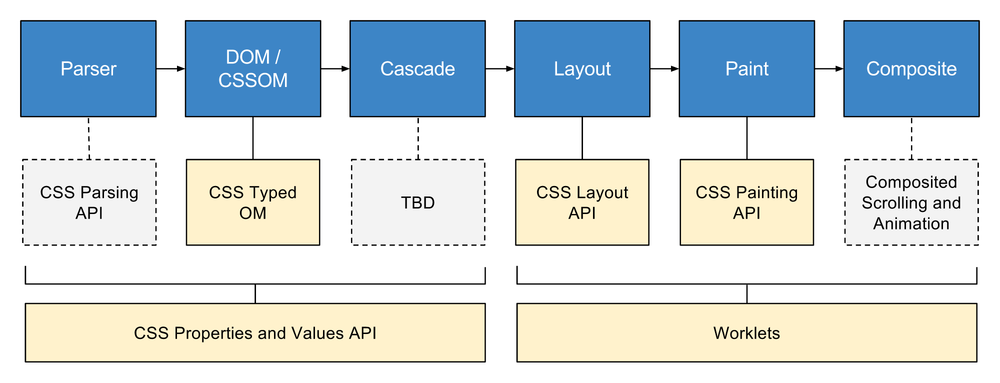
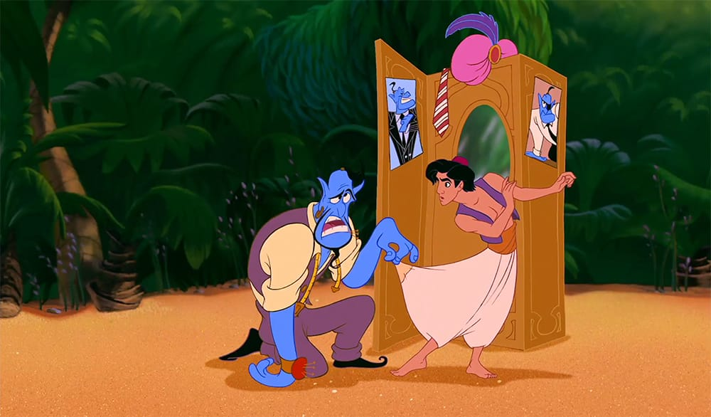
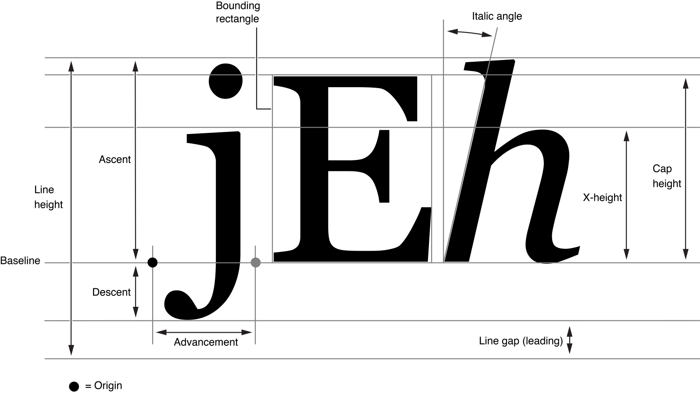
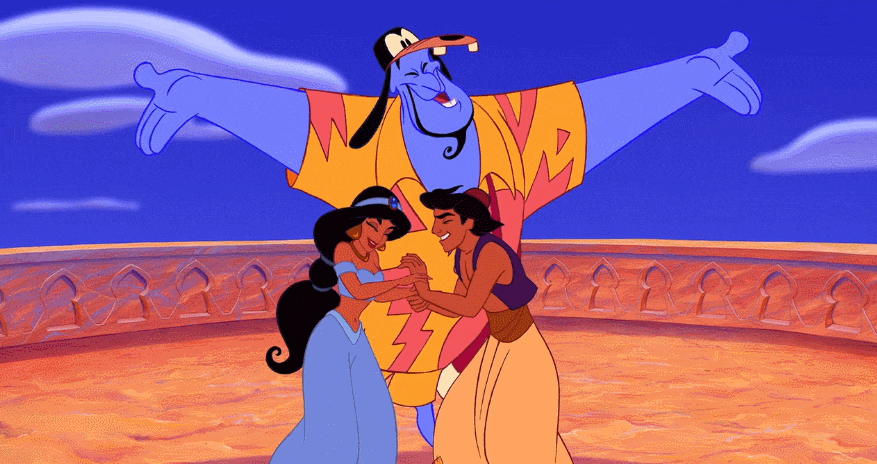
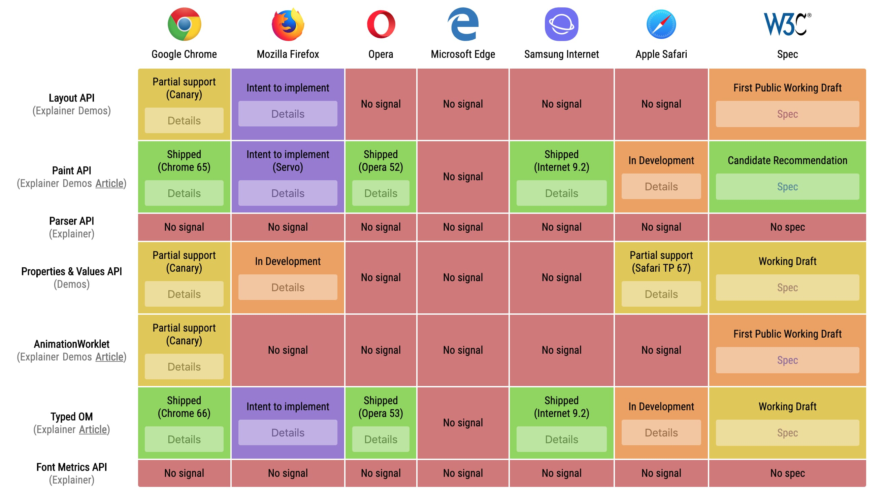

Никита Дубко
доброжелюбный бородач;
адепт философии Pure CSS Images;
соорганизатор митапов MinskCSS и MinskJS.

Конвейер рендеринга в браузере
Скачивание и парсинг HTML, CSS и JavaScript
Конвейер рендеринга в браузере
Скачивание и парсинг HTML, CSS и JavaScript
Построение Document Object Model и CSS Object Model
На втором этапе на основе полученного исходного текста формируется два дерева, DOM и CSSOM, причем каждому листу DOM ставится
в соответствие свой узел CSSOM.
Конвейер рендеринга в браузере
Скачивание и парсинг HTML, CSS и JavaScript
Построение Document Object Model и CSS Object Model
Формирование дерева рендеринга
К полученным DOM и CSSOM применяются правила каскада, внутренние правила браузера, и на основании этого формируется render
tree.
Конвейер рендеринга в браузере
Скачивание и парсинг HTML, CSS и JavaScript
Построение Document Object Model и CSS Object Model
Формирование дерева рендеринга
Расчет положения на странице каждого элемента дерева рендеринга
Конвейер рендеринга в браузере
Скачивание и парсинг HTML, CSS и JavaScript
Построение Document Object Model и CSS Object Model
Формирование дерева рендеринга
Расчет положения на странице каждого элемента дерева рендеринга
Отрисовка пикселей каждого слоя
Конвейер рендеринга в браузере
Скачивание и парсинг HTML, CSS и JavaScript
Построение Document Object Model и CSS Object Model
Формирование дерева рендеринга
Расчет положения на странице каждого элемента дерева рендеринга
Отрисовка пикселей каждого слоя
Компоновка слоев и отображение в видимой области браузера
Конвейер рендеринга в браузере
Магия 🔮
Можем влиять на процесс из JavaScript 💪
Магия 🔮
Магия 🔮
Магия 🔮
Магия 🔮
Из всех шести этапов веб-разработчики могут явно влиять всего на один: построение DOM/CSSOM. По сути, движок рендеринга —
это «черный ящик», и почти все, что в нем происходит — некая браузерная «магия», основанная на спецификациях W3C.
Полифил — это код, реализующий какую-либо функциональность, которая не поддерживается в некоторых версиях веб-браузеров
по умолчанию.
Полифил
(function(self) {
'use strict';
if (self.es2020feature) {
return;
}
self.es2020feature = function() {
// Do some magic
};
self.es2020feature.polyfill = true;
})(this);
Чтобы написать свой polyfill, достаточно применить
monkey-patching к объекту, функциональность которого необходимо расширить. Как правило, разработчики полифилов
берут на себя определение наличия нативной реализации функциональности и ее использование.
Понифил 🦄
ponyfill.com
// is-nan-ponyfill.js
module.exports = function (value) {
return value !== value;
};
// app.js
var isNanPonyfill = require('is-nan-ponyfill');
isNanPonyfill(5);
Сторонники чистых функций и противники side-эффектов используют другой подход —
ponyfill . Суть его в том, что вместо применения патчей к существующим объектам и классам модуль возвращает чистую
функцию, которую можно использовать для замещения недостающей функциональности.
Транспайлер
// ES6
let point = { x: 0, y: 0 };
const {x, y} = point;
const arrowFunction = (a) => a ** 2;// ES5
'use strict';
var point = { x: 0, y: 0 };
var x = point.x,
y = point.y;
var arrowFunction = function arrowFunction(a) {
return Math.pow(a, 2);
};
Когда полифилов недостаточно, на помощь приходит
transpiling — перевод синтаксиса одного языка в другой. Так новые возможности EcmaScript 6 можно использовать
даже в очень старых браузерах, прогнав JavaScript-исходники через специальную программу-транспиллер.
box-sizing должен быть
border-box по умолчанию.
z-index следовало назвать
z-order или
depth и он должен Просто Работать для всех элементов (как для flex-элементов).
margin-top и
margin-bottom никогда не должны схлопываться автоматически, так как это
корень всего margin-collapse зла .
border-radius должен был называться
corner-radius .
size должен был быть сокращением для
width и
height , а не отдельным свойством
@page для обозначения размера листа.
Сами авторы спецификаций признают, что при проектировании CSS не все получилось хорошо. Например, некоторые свойства явно
стоило назвать по-другому. Но браузеры, к сожалению, слишком спешат реализовывать спецификации-черновики, а веб-разработчики
сразу же начинают их использовать, поэтому к моменту осознания неудачного решения изменять спецификации, как правило,
уже поздно.
В мире CSS давно и прочно укрепились препроцессоры и постпроцессоры:
Less ,
Sass ,
Stylus ,
PostCSS и другие. Их задача — ускорить разработку, добавить «синтаксический сахар» и/или автоматизировать некоторые
необходимые действия для расширения целевой аудитории приложения (например, добавление вендорных префиксов или right-to-left
раскладки).
@supports 😍
.articles {
display: grid;
grid-template-columns: repeat(4, 1fr);
}
@supports (display: layout(magic)) {
.articles {
--masonry-columns-count: 4;
display: layout(masonry);
}
}
Polyfill({
declarations:["position:sticky"]
})
.doMatched(function(rules) {
/* add styles */
})
.undoUnmatched(function(rules) {
/* reset styles */
});
Но что делать с теми возможностями, которые не реализовать только при помощи CSS? Решение есть — полифилы для CSS. Филипп
Уолтон написал
целую библиотеку , которая берет на себя отслеживание изменений DOM, специфичности селекторов, примененение @-rules,
наличие (о, ужас!) !important в коде. Вы пишете обычный JavaScript. Вам остается только корректно реализовать спецификацию.
Более подробно о том, как работают полифилы для CSS, можно посмотреть в докладе Василия Ванчука на MinskCSS Meetup #2
Отполифиль свой CSS .

22 декабря 2016 года Филипп Уолтон на сайте библиотеки polyfill.js опубликовал сообщение о том, что он больше не поддерживает
ее разработку. Разработчики должны принимать во внимание ограничения и трудности написания CSS-полифилов, используя эту
библиотеку.
Однако все это не меняет того факта, что разработчики по-прежнему могут влиять только на один этап конвейра рендеринга
в браузере, то есть не могут эффективно решать проблемы с производительностью, реализовывая грандиозные идеи дизайнеров.
Задумайтесь, а ведь пользователь видит на экране именно HTML и CSS, обработанные браузером. Да, сейчас чаще всего они
генерируются JavaScript-ом, но все-таки это именно HTML и CSS, на внутренние механизмы обработки которых разработчики
явно влиять не могут.
CSS-TAG Houdini Task Force 💎

Может возникнуть вопрос, почему проект назвали Houdini?
Гарри Гудини — знаменитый иллюзионист начала 20 века, который прославился не только сложными трюками с наручниками и побегами,
но и разоблачением популярной «магии» того времени — спиритизма.
У проекта CSS Houdini, собственно, те же цели: раскрыть механизмы «магии» CSS и показать, какие процессы стоят за видимым
результатом.

Новые спецификации Houdini для работы с конвейером рендеринга
Проект Houdini — это набор спецификаций, каждая из которых устанавливает правила, по которым разработчик может вмешиваться
в каждый этап конвейера рендеринга.
CSS Custom Properties
Говоря про проект Houdini, важно упомянуть другую спецификацию:
CSS Custom Properties (еще их называют CSS-переменными). Как вы увидите позже, в различных API эта возможность
современного CSS используется очень активно.
:root {
--r: 255;
--g: 20;
--b: 147;
--primary-color: rgb(var(--r), var(--g), var(--b));
}
.my-element {
--e-width: 200px;
--e-border-width: 20px;
background-color: var(--primary-color);
width: calc(var(--e-width) + var(--e-border-width));
}
Напомню синтаксис
CSS Custom Properties .
Используя CSS-функции
var() и
calc(), можно перенести различные вычисления из препроцессоров или JavaScript прямо в движок CSS.
Для установки значений, общих для всей страницы, можно использовать селектор
:root.
const isSupported = CSS.supports('--custom', 'property');// Получить значение custom property
const pinkElement = document.querySelector('.pink-element');
const elementWidth = window
.getComputedStyle(pinkElement)
.getPropertyValue('--element-width');// Изменить custom property для узла
pinkElement.style.setProperty('--element-width', '300px');// Изменить custom property в :root
document.documentElement.style.setProperty('--r', 190);
JavaScript
// JS
window.addEventListener('mousemove', function(e) {
const target = document.documentElement;
target.style.setProperty('--x', e.clientX);
target.style.setProperty('--y', e.clientY);
});
/* CSS */
.element {
transform: translate(
calc(var(--x) / 10 * 1px),
calc(var(--y) / 10 * 1px)
);
}
--foo: if(x > 5) this.width = 10; ✅
Проблема #1
const fontSize = window
.getComputedStyle(elem)
.getPropertyValue('font-size');
const fontSizeValue = parseFloat (fontSize);
console.log(fontSizeValue); // 25
лишняя операция преобразования в число;
нет лёгкого способа получить единицы измерения.
Как мы обычно задаем стили через JavaScript? Числа превращаем в строки, затем подставляем полученные строки в стили, там
они снова превращаются в числа. Таким образом мы значительно теряем производительность на операциях, которых, в принципе,
могло бы и не быть.
Решение #1
const element = document.querySelector('.elem');
const styleMap = element.attributeStyleMap ;
console.log( styleMap.get('font-size') );
// CSSUnitValue {value: 2.5, unit: "em"}
const computedStyleMap = element.computedStyleMap() ;
console.log( computedStyleMap.get('font-size') );
// CSSUnitValue {value: 25, unit: "px"}
Спецификация
CSS Typed OM определяет классы и интерфейсы API, благодаря которым можно почти полностью избежать лишних переводов
строк в значения CSS-свойств.
Частично реализована в Chrome (с 66 версии).
Проблема #2
const x = 50;
const offset = 10;
element.style.setProperty(
'transform',
`translate(${x}px, calc(1em + ${offset}px))`
);
лишняя операция преобразования в строку;
при неправильном `value` не бросает исключение.
Решение #2
const styleMap = element.attributeStyleMap ;
const transformValue = new CSSTransformValue([
new CSSTranslate(
CSS.px(50),
new CSSMathSum(CSS.em(1), CSS.px(5))
)
]);
styleMap.set('transform', transformValue);
Отлов ошибок
try {
CSSStyleValue.parse(
'transform',
'translate4d(bogus value)'
);
} catch (err) {
console.err(err);
}
Иерархия возможных значений свойств
CSSStyleValue
CSSUnparsedValue --my-custom-property: some custom value list
CSSKeywordValue border-image: initial
CSSNumericValue
CSSUnitValue height: 2px
CSSMathValue width: calc(1em + 5px)
CSSTransformValue transform: translate(5px, 10em)
CSSImageValue list-style-image: linear-gradient(red 0, blue 100%)
Проверить поддержку
if (window.CSS && CSS.number) {
// В вашем браузере CSS Typed OM работает
}
Если очень хочется попробовать API CSS Typed OM в деле, есть Chrome 66+ и
полифил . Но не рекомендуется использовать полифил в production, в репозитории стоит предупреждение на этот счет.
Идея
const background = window.cssParse.rule ("background: green");
background.attributeStyleMap.get("background").value; // "green"
const styles = window.cssParse.ruleSet (
`.foo {
background: green;
margin: 42px;
}`
);
styles.length; // 5
styles[0].attributeStyleMap.get("margin-top").value; // 42
Эта спецификация пока еще представлена в виде набора идей и перенесена в
репозиторий
WICG — W3C's Web Platform Incubator Community Group.
Суть ее в том, что браузер позволит самостоятельно обрабатывать текст CSS и изменять результат парсинга. Так можно добавить
свои собственные функции, селекторы или свойства и объяснить браузеру, как эти свойства нужно воспринимать.
Получится эдакий высокопроизводительный
PostCSS в браузере.
Реализации пока нет даже за флагами.
Асинхронная загрузка
const style = fetch("style.css")
.then(response => {
const styles = CSS.parseStylesheet(response.body);
// применить PostCSS прямо в браузере
return styles;
});
style.then(console.log);
CSSStyleSheet
const sheet = new CSSStyleSheet();
sheet.replaceSync('a { color: red; }');
sheet.replace('@import url("styles.css")')
.then(sheet => {
console.log('Styles loaded successfully');
})
.catch(err => {
console.error('Failed to load:', err);
});developers.google.com/web/updates/2019/03/nic73
CSS Properties and Values API
1 div
1 keyframe
20 строк CSS
5 строк JS
Проблема #3
:root {
--sidebar-width: 400px;
}
.closed {
--sidebar-width: 80px;
}
body {
transition: --sidebar-width 1s;
}
// JavaScript
CSS.registerProperty({
name: '--sidebar-width',
syntax: '<length>',
inherits: true,
initialValue: '80px'
});/* CSS */
@property --sidebar-width {
syntax: "<length>",
inherits: true,
initialValue: "80px"
}
Как анимировать CSS Custom Property (например, ширину sidebar)? CSS-переменные — это строки. Движок браузера не знает, как
их анимировать, потому что сложно вычислить разницу в 20% между строками "A" и "B".
CSS Properties and Values API — решение проблемы. На самом деле API имеет всего один метод, который позволяет
назначить тип для переменной, задать ее начальное значение и наследуемость.
Синтаксис
<length>
<number>
<percentage>
<length-percentage>
<color>
<image>
<url>
<integer>
<angle>
<time>
<resolution>
<transform-function>
<custom-ident>
<length | number>
<length>+
<image>#
small | smaller
Worklets
Worklet — урезанный Worker с ограниченными правами и работающий параллельно основному потоку. У него нет доступа
к DOM, поэтому работать он может только с теми объектами, к которым он непосредственно привязан, и только во время вызова
определенного события в своем
event loop .
// app.js — псевдокод
window.someWorklet
.addModule('some-worklet.js')
.then(_ => {
console.log('some-worklet — loaded');
});
// some-worklet.js — псевдокод
registerSomeWorklet('some-worklet-name', class {
process(arg) {
// делаем магию
}
});
Общая схема создания ворклета выглядит следующим образом.
Метод
registerSomeWorklet вторым аргументом принимает
class. Сделано это для того, чтобы можно было полноценно применять возможности ООП.

CSS Painting API 🎨
Если внутри вас сидит художник, или дизайнер на проекте «так видит», а заказчик это видение одобряет, то
CSS Painting API может решить часть ваших проблем.
CSS Painting API
Можно применять для отрисовки свойств:
background-image
border-image
list-style-image
content
-webkit-mask-image
cursor
CSS Painting API дает возможность определять, как должен отрисовываться элемент, который является изображением:
background-image ,
border-image ,
list-style-image ,
content .
registerPaint('my-paint', class MyPaint {
static get inputProperties() { return ['--foo']; }
static get inputArguments() { return ['<color>']; }
static get contextOptions() { return { alpha: true }; }
paint(ctx, geom, properties, args) {
// Можно рисовать почти как на обычном canvas
}
});
По сути холст для рисования — облегченный canvas.
Для оптимизации производительности repaint вызывается только тогда, когда произошли изменения в
inputProperties или
inputArguments.
/* style.css */
.my-element {
--foo: deeppink;
background-image: paint (my-paint);
}// app.js
CSS.paintWorklet.addModule('my-paint.js');
За вызов ворклета при отрисовке элемента отвечает функция CSS
paint(). Первым аргументом в нее необходимо передать имя ворклета, дальше через запятую можно передать аргументы, соответствующие
типам, описанным в ворклете.
Ограничения контекста для Paint Worklet
Нельзя полагаться на global scope.
Только 2D context.
Нельзя работать с текстом.
Время отрисовки должно укладываться в 1 frame.
Нет доступа к хранилищам данных.
Box Tree API
<style>
p::first-line { color: green; }
p::first-letter { color: red; }
</style>
<p>foo <i>bar baz</i></p>
Как вы думаете, сколько контейнеров генерирует браузер после обработки такого кода?
контейнер первой строки;
контейнер второй строки;
контейнер для первого символа;
контейнер для оставшихся символов
oo;
контейнер для
bar;
контейнер для
baz.
Суть Box Tree API в том, чтобы дать разработчикам возможность получать размеры и положение этих фрагментов.
const element = document.querySelector('.my-element');
element
.getFragmentInformation ("direct-fragments-only")
.then(info => {
// ...
});// Значения фильтра
"direct-fragments-only" | "fragment-hierarchy"
interface DeadFragmentInformation {
Node node ;
double width ;
double height ;
double top ;
double left ;
boolean isOverflowed ;
FrozenArray<DeadFragmentInformation>? children ;
DeadFragmentInformation? nextSibling ;
DeadFragmentInformation? previousSibling ;
DeadFragmentInformation? nextInBox ;
DeadFragmentInformation? previousInBox ;
};
CSS Layout API 🚀
CSS Layout API — самое сложное, и при этом самое мощное нововведение CSS Houdini. Оно позволит вмешиваться прямо
в этап расположения элементов на странице. Раскладку вроде grid и flexbox можно будет установить как npm-пакет, подключить
к странице и управлять ею собственными параметрами.
Если разработанная раскладка будет полезна многим (например, masonry), вендоры могут реализовать ее на языке, на котором
написан движок браузера, чтобы сделать его более производительным.
registerLayout('example', class {
static inputProperties = ['--foo'];
static childrenInputProperties = ['--bar'];
static layoutOptions = {
childDisplay: 'normal',
sizing: 'manual'
};
async intrinsicSizes (children, edges, styleMap) {
// Intrinsic sizes code goes here.
}
async layout (children, edges, constraints, styleMap, breakToken) {
// Layout code goes here.
}
});
На первый взгляд, реализация layout worklet выглядит просто, но в спецификации до сих пор много нерешенных моментов. Layout
API сильно зависит от Box Tree API. Однако в Chrome Canary уже есть реализация layout с ограничениями.
/* CSS */
.layout-example {
--foo: 5;
display: layout (my-layout);
}
.layout-example .child {
--bar: 200px;
}// JavaScript
window.layoutWorklet.addModule('my-layout.js');
Если написание собственной раскладки все-таки немного Rocket Science, то ее использование такое же простое, как и использование
других ворклетов.
CSS Animation Worklet API
Web Animations
// JavaScript
const element = document.querySelector('.my-element');
element.animate([
{'--some-color': 'red', 'opacity': 0 },
{'--some-color': 'blue', 'opacity': 1 },
], {
direction: 'alternate',
duration: 5000,
iterations: Infinity,
});
Polyfill
CSS Animation Worklet API тесно связана со спецификацией
Web Animations , которая позволяет через JavaScript нативно и эффективно анимировать CSS-свойства. Так как браузерная
поддержка пока скудная, пробовать API на вкус лучше с помощью
полифила .
// animator.js
registerAnimator(
'scroll-position-animator',
class {
constructor(options = {}) {
this.coef = options.coef || 1;
}
animate(currentTime, effect) {
effect.localTime = currentTime * this.coef;
}
});
Houdini's Animation Worklet, Surma
Анимации, привязанные к scroll — большая дыра в производительности. 60FPS во всех браузерах пока что тяжело достичь. Но если
переложить эту задачу на
CSS Animation Worklet API , то производительность вырастет в разы.
Для обработки анимаций в отдельном потоке нужно зарегистрировать свой Animator.
// app.js
await CSS.animationWorklet.addModule("animator.js");
new WorkletAnimation(
'scroll-position-animator',
keyframeEffect,
scrollTimeline,
{ coef: 1.2 }
).play();
const keyframeEffect = new KeyframeEffect(
document.querySelector('#target'),
[
{ transform: 'translateX(0)' },
{ transform: 'translateX(500px)' }
],
{
duration: 2000,
iterations: Number.POSITIVE_INFINITY
}
);
const scrollTimeline = new ScrollTimeline({
timeRange: 2000,
scrollSource: document.querySelector('.source'),
orientation: 'vertical',
startScrollOffset: '200px',
endScrollOffset: '500px'
});
Так как сейчас все эти API почти не реализованы в браузере, для работы необходим полифил, который можно скачать в
репозитории Google. Он жестко добавляет на страницу свои скрипты из сторонних источников, поэтому пользуйтесь им
на свой страх и риск.
Где использовать?
Анимации, привязанные к скроллу.
Свои timing-функции для анимаций.
Синхронизация анимаций.
Отслеживание позиции скролла.

Font Metrics API позволит вычислять различные метрики шрифтов, к которым на данный момент доступа нет. Как посчитать
точную ширину символа? Чему равна разница в высоте между буквами
x и
j ? Разработчики шрифтов работают с большим количеством метрик, но веб-разработчикам они пока недоступны явно.
const element = document.querySelector('.my-element');
document.measureElement (element);
interface FontMetrics {
double width ;
FrozenArray<double> advances ;
double boundingBoxLeft ;
double boundingBoxRight ;
double height ;
double emHeightAscent ;
double emHeightDescent ;
double boundingBoxAscent ;
double boundingBoxDescent ;
double fontBoundingBoxAscent ;
double fontBoundingBoxDescent ;
Baseline dominantBaseline ;
FrozenArray<Baseline> baselines ;
FrozenArray<Font> fonts ;
};

Пока мозг еще удерживает полученную информацию, коротко сформулируем, что же нового нам несет CSS Houdini.
Почему Houdini хорош?
Производительность;
Удобство использования;
Возможность написания полифилов для CSS;
Меньше различий между браузерами;
Полный контроль.
👍
Недостатки Houdini
Еще несколько спецификаций, которых нужно долго ждать;
Не решает проблему поддержки старых браузеров;
Для эффективной разработки нужно еще больше знаний;
Асинхронная природа Worklets — моргание стилей.
🥺

Как обстоят дела с другими браузерами?
Не только команда Chrome занимается внедрением спецификаций в ночные сборки браузера. Даже Safari изъявили желание поучаствовать
в разработке и реализации спецификации.
Parser
DOM /
CSSOM
Cascade
Layout
Paint
Composite